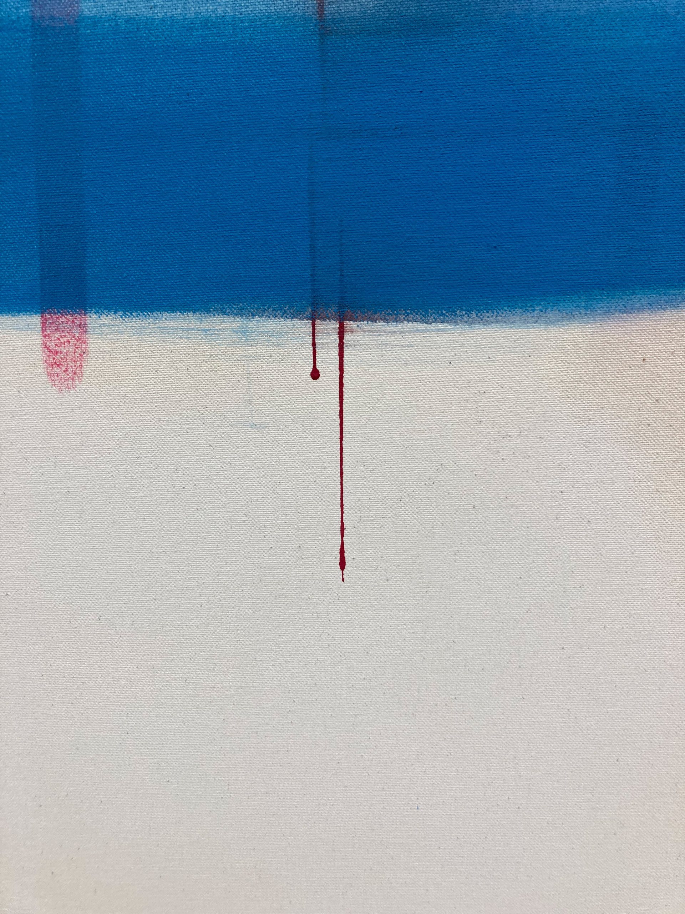
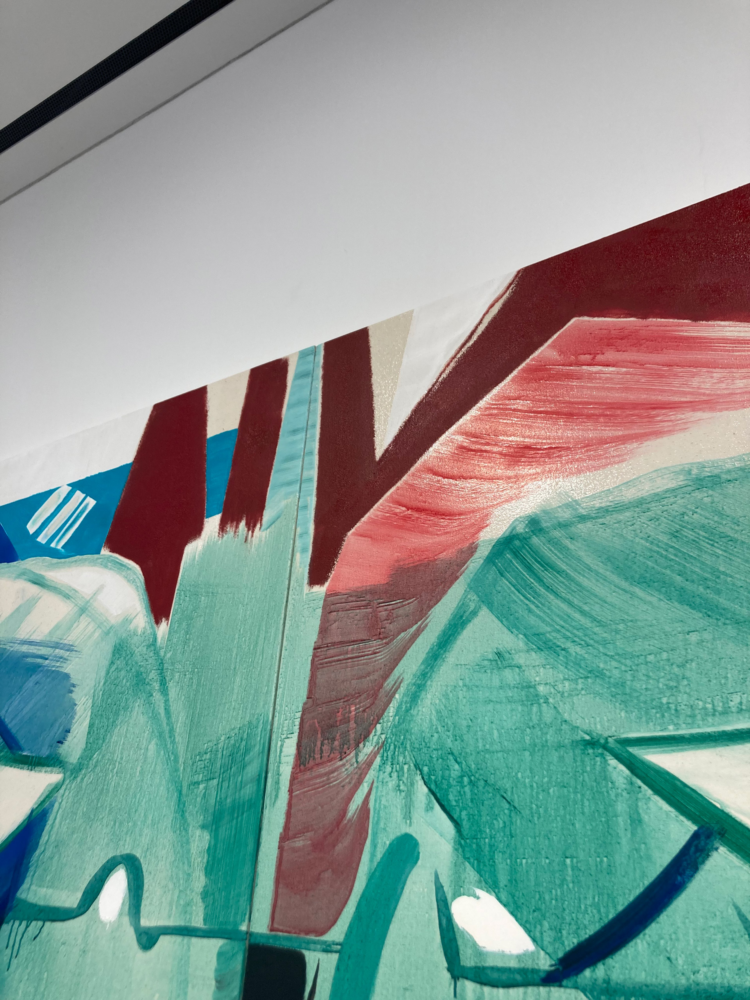
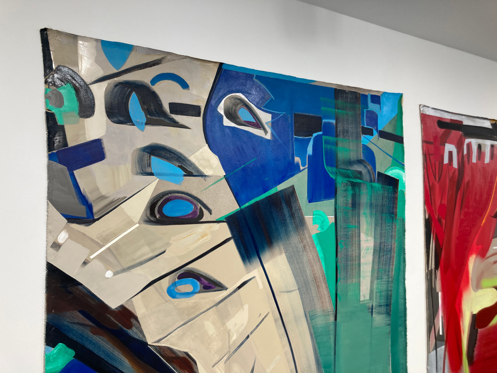

VR 게임속 Pit stop
<안녕하세요. 재훈 하루를 잘 마루리하고 계신가요?
어제부터 YPC에서 하는 글쓰기 워크샵에 참여했는데요.
김세은 작가님의 전시에 대해 워크샵에서 써보면 어떨까 하여 방문했습니다.
(이전에 재훈에게 평면 작업을 어떻게 보고 어떻게 말해야 할지 잘 모르겠다는 이야기를 했었는데요.
이번 기회에 그렇게 느껴왔던 부분에 대해 도전해봐야겠다 생각해, 페인팅 전시를 골랐습니다.)
두산 갤러리에 김세은 작가님이 와계셨어요. 그래서 '페인팅을 보는 것'에 대해 이야기를 조금 나누면서 전시를 볼 수 있었습니다.

사실 대화를 나누었지만 모르겠는건 모르겠는거여서. 잘 모르겠다는 마음으로 YPC SPACE에 가서 워크샵에 참여했어요. 첫 주는 묘사하기에 대한 것이었는데요. 어제 써 본 글을 아래 첨부합니다. 이런식으로 글을 주고받는 것도 좋겠다는 생각이 들었어요.
두산 갤러리는 높은 층고의 군더더기 없는 화이트큐브 공간이다. 한눈에 보기에도 사람 키의 두배는 될 듯 보이는 거대한 회화 세 점이 사이좋게 한쪽 벽을 채우고 있다. 다른 그림들도 작지 않다. 공간 가운데에는 조금 낮아보이는 귀여운 철제 벤치가 있다. 잠깐 앉을수도, 짐을 둘 수도 있다. 그림들을 볼 때 가장 먼저 보이는 것은 색이다. 그림마다 세 네가지 정도가 뒤영켜 있다. 그리고 두꺼운 붓으로 크게 크게 그어진 선 혹은 면이 보인다. 이 면들은 그림 속에 공간을 만들어 내는 듯 하다가도 다시 밀어내기도 한다. 명백히 공간처럼 보이지도, 그렇다고 평평한 표면만 있는 것도 아닌 그림이다.
프로젝터로 쏜 상의 초점이 맞지 않았을 때의 모습과 비슷한가? 흐려진 풍경. 그렇게 말할수는 없을 것 같다. 수용성 유화가 흘러내린 자국과 아크릴 스프레이로 칠해 경계면이 흐릿한 부분도 있지만, 마스킹 한 후 떼어낸 듯한 경계가 분명한 표면들이 있다. 붓자국이 선명한 선들에서도 망설임 없는 붓이 지나갔음이 느껴진다. 흐려진 풍경은 잘 어울리지 않는 것 같다. 그 보다는 조각난, 부서져 다시 조합된 풍경이 더 잘 어울린다. 부서뜨리고 다시 조합한 화면. 부서진 것은 공간일 수도, 혹은 공간을 지각한 몸, 혹은 그저 몸일 수도 있다. 부서진 것들이 뒤엉키고 다시 자리를 잡아간다. 이 과정은 명백하게 무엇이 아닌 화면을 만들어낸다. 어느 부분은 대담하게 나아가고, 어느 부분은 섬세하게 지나간다. 어디는 색이 섞이지 않은채 함께 있고, 어디는 반짝인다.
 저는 반짝이거나 흘러내리는 부분들에 눈이 많이 갔는데요. 글을 보고 나니 조금 더 상상력을 가지고 그림들을 보는게 좋을 것 같다는 생각이 들었습니다. 근처를 지날 일이 있으면 한번 더 들러보려고 해요.
그럼 재훈 답장을 기대하는 마음으로 기다리고 있겠습니다. 부디 내일도 좋은 하루가 되길 바라며, 내일 메일로 다시 인사드릴게요.
고마워요. 손 드림.
3월 29일
안녕하세요. 재훈 저도 오랜만에 메일을 보냅니다. 재훈이 보내준 메일을 재미있게 보았어요. 특히 시간의 흐름의 따라 퍼포먼스의 몰입도가 달라지는걸 그래프로 그려둔 부분이 재미있었습니다.
재훈 말처럼 저도 좋은 경험을 나눌 수 있는 동료가 있어서 기뻐요. 아르코에서 봤던 전시에 대해 메일을 쓸까 했는데, 지난주에 이어 이번주에도 YPC에서 글쓰기 워크샵을 들어서요. 김세은 작가의 PIt stip에 대한 글을 하나 더 담아 보내겠습니다.
오늘 워크샵의 컨셉은 보통의 인간이 아닌 다른 시점을 상상하며 전시에 대해 서술해보는 것이었어요. 워크샵에 참여하기 전에 한번 더 두산 갤러리에 들러서 전시를 보았구요. 두산 갤러리가 VR로 구현한 전시장이라면? 하고 상상하면서 글을 써보았어요.
이런 글을 쓰게 된 계기에는 사다리에 올라가서 그림을 보고, 낮은 의자에 앉아서 그림을 보는 등 다양한 시점으로 작업을 볼 수 있었던 것이 계기가 된 듯 해요.
지난주에 방문했을 때 김세은 작가님이 계서서, 사다리를 잠깐 꺼내주셨었는데요. 원래 전시에 포함시키려고 했던 요소인데 너무 시선을 잡아먹어 빼기로 했다고 하시더라구요.
이건 제가 사다리에 올라가서 찍은 사진이에요. 아무튼 사다리에 올라가보고 벤치에도 앉아서 봐보고, 그런식으로 시점을 다양하게 해보며 전시를 관람하려 해보았구. 그런 경험을 바탕으로 상상력을 발휘해 써보았습니다.
'두산 갤러리는 높은 층고의 군더더기 없는 화이트 큐브 공간이다. 가상의 전시장을 만든다고 생각했을 때, 튜토리얼 단계에서 가장 먼저 시도해볼 만한 전시장의 구조이고, 작업의 배치이다. 평면 작업들이 사이 좋게 벽에 붙어있다.
가상의 몸으로 전시장을 떠돈다. 천장을 뚫고도 나가보고 바닥 아래로도 내려가본다. 보여줄 것을 계획하지 않아, 마감하지 않은 표면을 본다. 껍데기의 안쪽을 아래에서 올려다본다. 다시 올라온다. 머리만 바닥에서 내민다. 그림을 올려다본다.
그것은 쏟아질 것 같다. 내용물이 표면을 뚫고 쏟아져 내릴 것 같다.
공중으로 천천히 올라간다. 시점이 올라갈 수록 그림의 이 부분이 반짝이다, 저 부분이 반짝인다. 공중에 떠 있다. 그림의 상단 부분을 눈높이로 본다. 가까이 가본다. 그것은 단단하다. 내용물들이 단단하게 자리잡혀 있다.
표면에 더 가까이 가본다. 표면 안으로 눈을 걸치면, 갤러리 바닥처럼 마감되지 않은 안쪽면이 나올 것이다. (계속 계속 들어가면 캔버스의 뒷면, 속이 없는 벽, 바깥 풍경이 없는 유리창이 나올 것이다. 벽이 비스듬하게 세워져 있으니 오른쪽 눈부터 검은 공간으로 들어갈 것이다. 곧이어 양쪽 눈 모두가 검은 공간에 있고, 약간 틈과 두께를 지나 회색 유리창을 마주할 것이다.)
표면으로 눈을 밀어넣어 본다. 링크. 예상과 다르게 눈은 어떤 공간으로 들어선다. 사방이 색이다. 커다란 고래에게 먹혀 장기 속에 들어온 것 같은 구조를 알기 어려운 공간이다. 밖에서 보았던 것들이 여기저기에 있다. 어떤 것들은 표면에 붙어 있고, 어떤 것들은 조금 떨어진 곳에 있다. 아주 멀리 있는 것을 향해 간다. 몸이 막힌다. 그곳까지는 다다를 수 없다. 멀리서 바깥과 연결되는 표면을 본다. 그건 이제 어떤 창처럼 보인다. 창으로 빛이 들어온다.'
조금 민망한 글이지만, 저번에 재훈이 재밌게 읽어준 것 같아 한번 더 보내보아요.
즐거운 메일 보낼 수 있도록 이번주도 힘내보겠습니다.
그럼 하루 마무리 잘하구요.
다음 메일에서 보아요!
고마워요.
손 드림